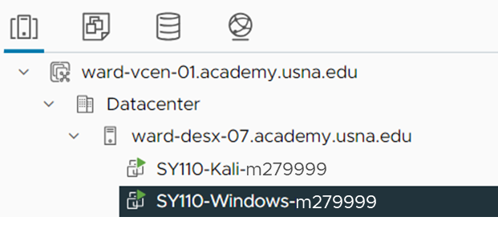
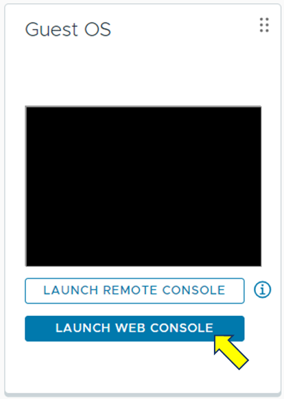
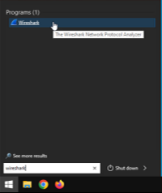
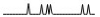
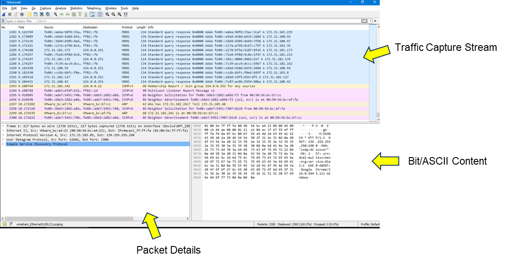
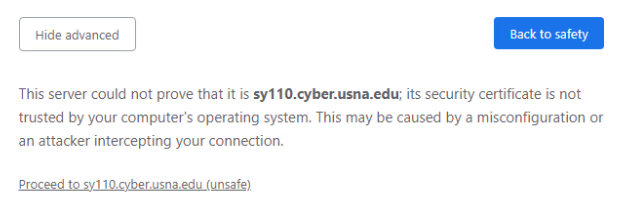

After completing these activities you should be able to:
Log into vSphere and access the Virtual Machines (VMs).
Expand the virtual Datacenter to show systems available and select the Windows VM as shown below.
If the VM is powered off (see example below), click the green arrow next to the name of the virtual machine to send the Power On signal.
Select Launch Web Console for the Guest OS.
A new browser tab will open for the Windows VM.
Use the default credentials BlueGold24 to login as sy110usr. You may need to select this user from the lower left-hand side of the login screen.
You may adjust the display resolution by right-clicking on the desktop and select Display Settings.
Click on Windows Start, type Wireshark, and launch the program.
As the Wireshark initializes, observe network traffic that's generated on each of the interfaces by looking at the packet stream graph:
Make a note of which network interface, other than loopback, is generating observable traffic. In the Virtual Machine, open a command prompt and use the network utility tool, ipconfig /all, to display the network configuration and document the following:
This part of the lab is designed to reintroduce you to the VDE by remotely accessing the Windows VM. The steps outlined should have successfully verified your VM's operational state and familiarization with its network configuration.
The WireShark program should be running from the previous series of questions. WireShark provides a basic visual display on packets observed on the interface. Double-click on the interface displaying network traffic (not the loopback).
The network interface stream will open with the window breakdown as follows:
Add a filter to view ARP frames and view announcements and view the frame details. Type arp in the filter bar at the top of Wireshark and hit enter. If the filter expression is valid, it will show as green; if it is invalid, it will be red (the filter will show as red as you type, but should turn to green once you complete your valid filter).
Within the VM, open a browser and navigate to the message board http://sy110.cyber.usna.edu/msg/delozier/msg/mb.html
The IP address of the sy110.cyber.usna.edu server is 192.168.0.2.
Within a Windows Shell, conduct a DNS query for sy110.cyber.usna.edu by using the nslookup network utility.
In the VM, login to the message board. Create a new account if you are not able to recall previous accounts and passwords. Do not use a real password!
Once successfully authenticated, return to the WireShark app and scroll to the bottom to view the latest network traffic. Note: Change the filter to http to view web traffic.
Make note of the application layer data in the HTTP GET request and identify the name-value pair sent as part of teh request. Were you able to view the information in plain text?
Close the browser tab for the message board, and reopen it as https instead of using http: https://sy110.cyber.usna.edu/msg/delozier/msg/mb.html
When asked, you can proceed by using the Show Advanced button and clicking through the link as shown below. (We're using fake certificates that the browser doesn't like.)
Update the WireShark filter rule to tcp.port==443 && ip.addr==192.168.0.2
Login to the message board and return to WireShark to observe its output.
Complete the HTTP and HTTPS Checkpoint to finish the lab!